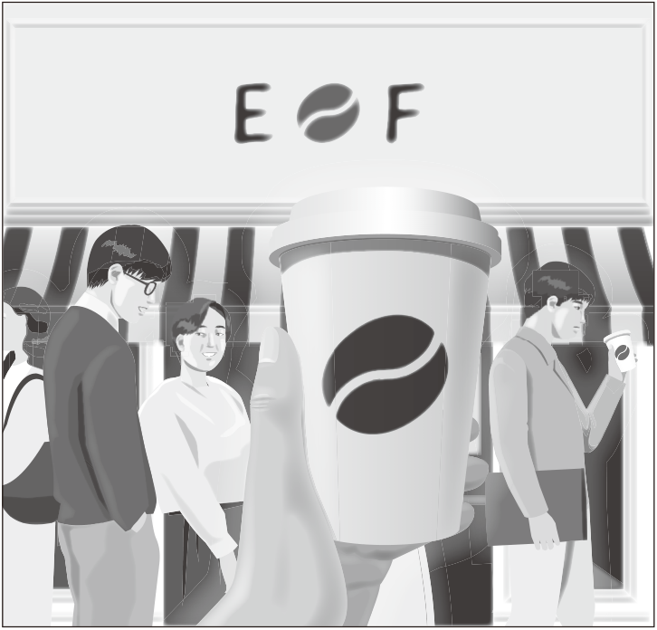

投稿A
今日，⓪家から千葉駅までの通学定期券を6か月分買ったよ。自販機で買えるなんて知らなかった。
第2問 次の問い（A・B）に答えよ。（配点30）
A 次の文を読み，後の問い（問1～6）に答えよ。
M さんは，昨日の情報の授業で，SNS を利用する際の注意点について学んだ。
問1 先生から，SNS を利用する際に日頃から気を付けていることを3点あげよという課題が出されたので，M さんは，自分なりの注意点として次の3点を書き出してみた。書き出したそれぞれの文章中の下線部(a)～(c)の内容の正誤の組合せとして最も適当なものを，後の⓪～⑦のうちから一つ選べ。ア
問2 授業の中で，SNS に投稿する写真に関する注意点の説明があった。M さんは，今までにSNS に投稿した内容を確認したところ，コーヒーショップ前で他の人たちが写り込んでいる写真（図1）を撮影して投稿したことがあった。この写真の投稿について，あ～うのどの権利を侵害する可能性があるか。当てはまる権利を過不足なく含むものを，後の解答群のうちから一つ選べ。イ

問3 次の文章を読み，空欄ウ～カに入れるのに最も適当なものを，図2の投稿A～F にある記述⓪～ⓐのうちから一つずつ選べ。
M さんは，自分がSNS に投稿した情報が，自身に関する情報の特定につながるかもしれないと考えた。そこで，かつて投稿した図2の投稿A～F にあるいくつかの内容を段階的に組み合わせていくことで，M さんが参加した大会名，所属学校名，氏名を特定できるか試してみた。
例えば，投稿E に含まれる「DNC ホール」をキーワードにWeb 検索をするとDNC ホールで開催されたイベント一覧が閲覧でき，投稿E の投稿日をもとに，その日に開催されたイベントを絞り込むことができた。さらに，投稿F に含まれる「アナウンス部門」という記述から，M さんが参加した大会名を特定することができた。
また，投稿C に含まれる「EOF コーヒーショップ」をキーワードにWeb検索すると，コーヒーショップの所在地が記載されている店舗一覧情報にたどり着き，「ウ」の記述からどの店舗かを特定できた。その所在地から得た住所と「エ」の記述に含まれる情報を組み合わせ，地図アプリを確認することで，M さんの所属学校名を特定することができた。
さらに，特定した参加大会名からその大会のWeb サイトにたどり着き，大会の各部門・各賞の入賞者とその所属学校名の情報を得た後，先に特定できた所属学校名と「オ」の記述からM さんの氏名を特定することができた。
その他にも，「カ」の記述とその投稿日時から，M さんの居住している市町村名を特定できる可能性がある。
今日，⓪家から千葉駅までの通学定期券を6か月分買ったよ。自販機で買えるなんて知らなかった。
車で親の買い物につき合わされたよ。①今日はこのスーパーの特売日らしい。
今日，②学校の正門の向かい側に③EOFコーヒーショップがオープンですって。さすが④千葉県初，唯一の店だけあって行列すごい。
⑤うちの町内の古民家が昨日重要文化財に指定されたとかで，ニュースの中継がいっぱい来てた！今度見に行ってみよっと。
⑥部長として絶対に遅刻できないんで(キリッ)朝5時起きで⑦DNCホールに来たよ。⑧今日はここでいろんな大会があるみたい。千葉県No.1目指してとにかくがんばる！
大会おわった。⑨うちの部活から私も含め優秀賞に3人選ばれた！ⓐアナウンス部門での受賞はうちの学校から私だけ。最優秀賞はとれなかったけどがんばった(ほっ)
図2 MさんがかつてSNSに投稿した内容の一部
問4 SNS に投稿された写真から読み取れる内容に関連する事例を調べてみた。そして，写真に写っていたピースサインから指紋が読み取られる可能性があることがわかった。この事例が可能になった背景として，今日のスマートフォンに使われている高度な情報技術がある。この事例に直接関係する情報技術の進歩として最も適当なものを，次の⓪～③のうちから一つ選べ。キ
問5 授業で，見知らぬアカウントから直接メッセージが届く場合があると説明を受けた。例えば，「T 株式会社（PR 担当）」から図3のようなメッセージが届いたとする。このようなメッセージを受け取った場合，一般的にとるべき対応として最も適当なものを，後の解答群のうちから一つ選べ。ク
図3 「T株式会社（PR担当）」から届いたメッセージ
問6 次の文章中の空欄あ・いに当てはまる語句の組合せとして最も適当なものを，後の⓪～⑤のうちから一つ選べ。ケ
SNS やメールを利用していると，日頃よく利用するサービスを提供している会社を偽装したメッセージやメールが送られてくることがある。このとき，適切な対応をしないと，パスワードなどのアカウント情報をだまし取られることがある。これをあという。アカウント情報をだまし取った人物が，このアカウント情報を使ってWeb サービスなどにログインする行為は，いに違反すると考えられる。
| 選択肢 | あ | い |
|---|---|---|
| ⓪ | テキストマイニング | 個人情報保護法 |
| ① | フィッシング | 個人情報保護法 |
| ② | フィルタリング | 個人情報保護法 |
| ③ | テキストマイニング | 不正アクセス禁止法 |
| ④ | フィッシング | 不正アクセス禁止法 |
| ⑤ | フィルタリング | 不正アクセス禁止法 |
（注）正式名称個人情報保護法（個人情報の保護に関する法律）不正アクセス禁止法（不正アクセス行為の禁止等に関する法律）